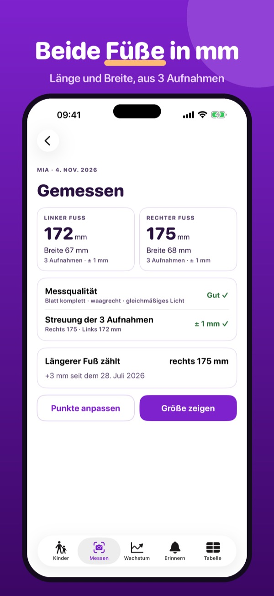
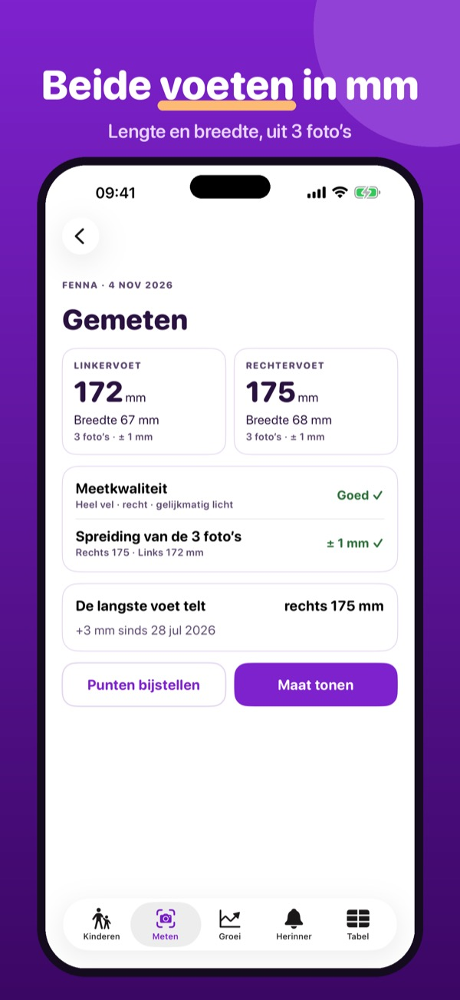
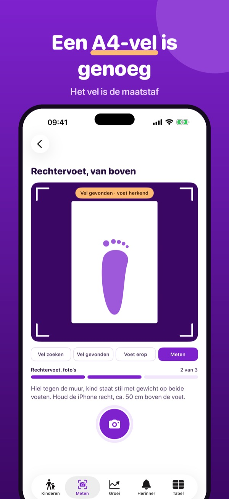
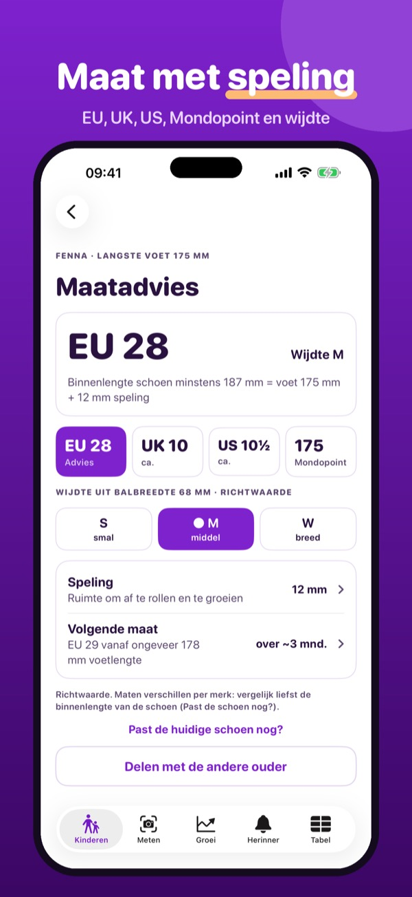
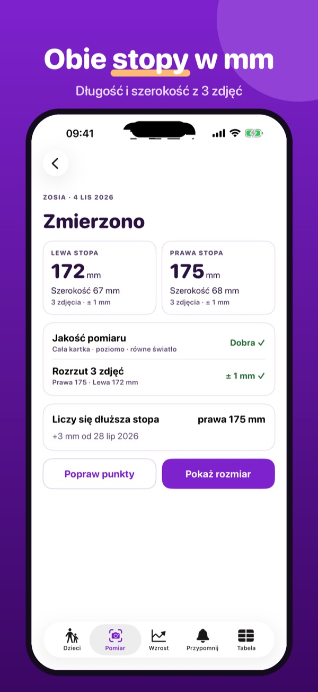
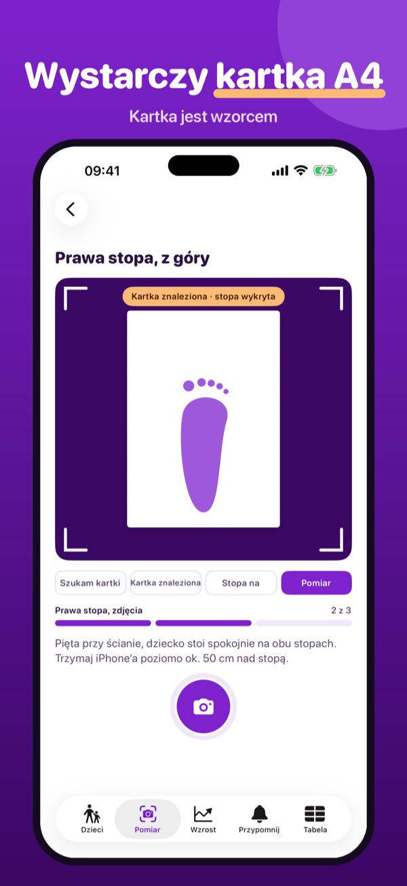
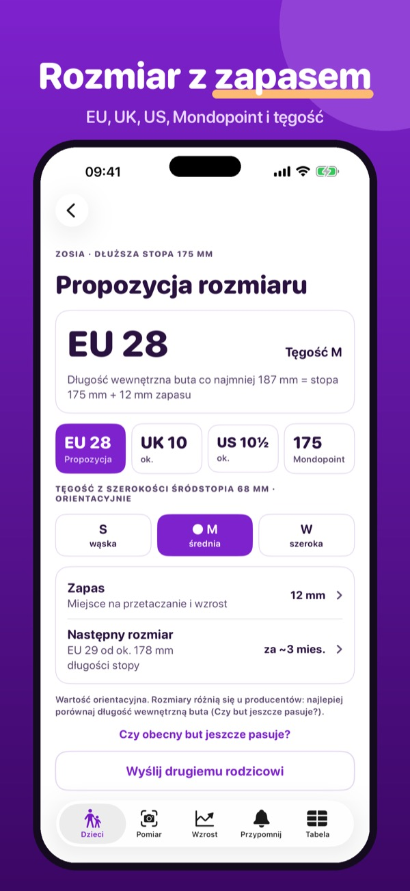
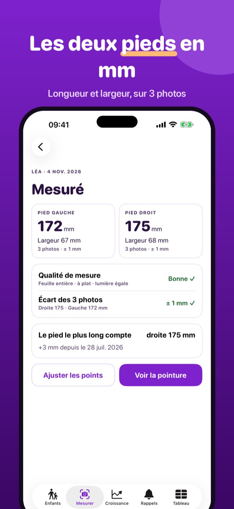
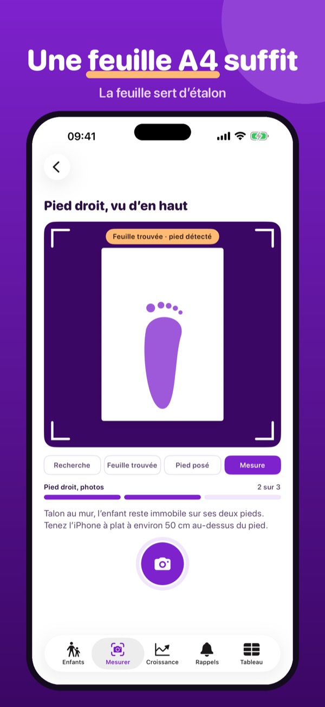
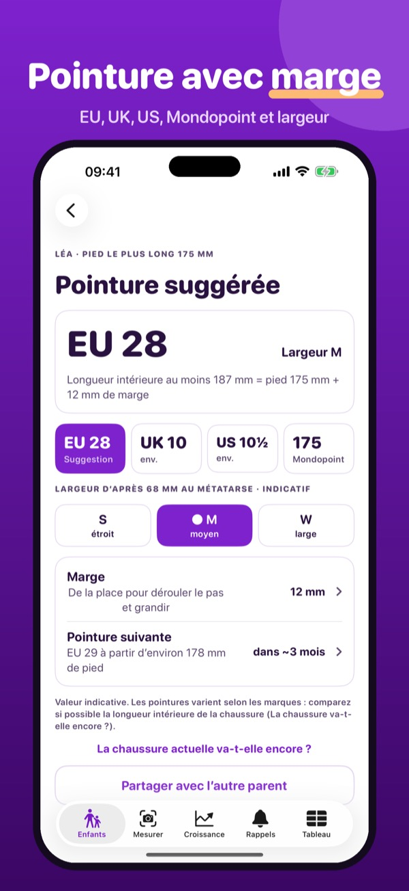

Schuhgröße per Foto auf A4
Ein A4-Blatt an die Wand, Kind draufstellen, von oben fotografieren: Stepsize misst Fußlänge und -breite in mm und schlägt eine Schuhgröße vor.

Passt der Schuh noch? Stepsize misst die Füße deiner Kinder zu Hause mit einem A4-Blatt als Maßstab. Das iPhone erkennt Blatt und Fuß, misst beide Füße in Millimetern und macht einen Größenvorschlag.
Ein Kind mit unbegrenzten Messungen, Größenvorschlag und Wachstumskurve geht ohne Kauf. Stepsize Plus ist ein Einmalkauf: beliebig viele Kinder, Sohlen-Check und Erinnerungen vor Saisonbeginn. Kein Abo.
Stepsize liefert Richtwerte für den Schuhkauf. Es beurteilt keine Fußgesundheit und ersetzt keine Beratung im Fachgeschäft. Größen fallen je nach Hersteller unterschiedlich aus.
Terms of Use (EULA): https://www.apple.com/legal/internet-services/itunes/dev/stdeula/
Privacy: https://apps.baytech.nl/stepsize-eu/
Schoenmaat via foto op A4
Een A4-vel tegen de muur, kind erop, foto van boven: Stepsize meet voetlengte en -breedte in mm en stelt een schoenmaat voor.



Past de schoen nog? Stepsize meet de voeten van je kinderen thuis met een A4-vel als maatstaf. De iPhone herkent vel en voet, meet beide voeten in millimeters en stelt een maat voor.
Eén kind met onbeperkt metingen, maatadvies en groeicurve werkt zonder aankoop. Stepsize Plus is een eenmalige aankoop: onbeperkt kinderen, zoolcheck en herinneringen voor het seizoen. Geen abonnement.
Stepsize geeft richtwaarden voor het kopen van schoenen. Het beoordeelt geen voetgezondheid en vervangt geen advies in de schoenwinkel. Maten verschillen per merk.
Terms of Use (EULA): https://www.apple.com/legal/internet-services/itunes/dev/stdeula/
Privacy: https://apps.baytech.nl/stepsize-eu/
Rozmiar buta ze zdjęcia A4
Kartka A4 przy ścianie, dziecko staje na niej, zdjęcie z góry: Stepsize mierzy długość i szerokość stopy w mm i proponuje rozmiar buta.



Czy but jeszcze pasuje? Stepsize mierzy stopy Twoich dzieci w domu, używając kartki A4 jako wzorca. iPhone rozpoznaje kartkę i stopę, mierzy obie stopy w milimetrach i proponuje rozmiar.
Jedno dziecko z nieograniczonymi pomiarami, propozycją rozmiaru i krzywą wzrostu działa bez zakupu. Stepsize Plus to jednorazowy zakup: dowolna liczba dzieci, sprawdzanie wkładki i przypomnienia przed sezonem. Bez subskrypcji.
Stepsize podaje wartości orientacyjne do zakupu butów. Nie ocenia zdrowia stóp i nie zastępuje porady w sklepie obuwniczym. Rozmiary różnią się u producentów.
Terms of Use (EULA): https://www.apple.com/legal/internet-services/itunes/dev/stdeula/
Privacy: https://apps.baytech.nl/stepsize-eu/
Pointure par photo sur A4
Une feuille A4 contre le mur, l’enfant dessus, une photo d’en haut : Stepsize mesure la longueur et la largeur du pied en mm et suggère une pointure.



La chaussure va-t-elle encore ? Stepsize mesure les pieds de vos enfants à la maison avec une feuille A4 comme repère. L’iPhone reconnaît la feuille et le pied, mesure les deux pieds en millimètres et suggère une pointure.
Un enfant avec mesures illimitées, pointure suggérée et courbe de croissance s’utilise sans achat. Stepsize Plus est un achat unique : enfants illimités, contrôle de la semelle et rappels avant la saison. Sans abonnement.
Stepsize donne des valeurs indicatives pour l’achat de chaussures. Il n’évalue pas la santé du pied et ne remplace pas le conseil d’un magasin spécialisé. Les pointures varient selon les marques.
Terms of Use (EULA): https://www.apple.com/legal/internet-services/itunes/dev/stdeula/
Privacy: https://apps.baytech.nl/stepsize-eu/